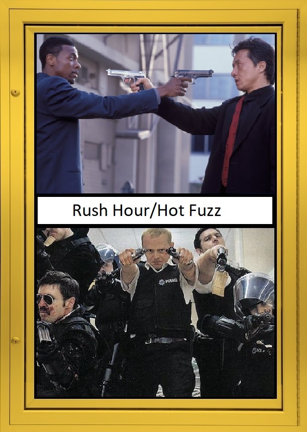

RUSH HOUR is recognized as one of the best buddy-cop films of all time, standing up there with other flicks such as LETHAL WEAPON, but there’s another movie some people tend to overlook and that is Edgar Wright's comedy masterpiece: HOT FUZZ. While RUSH HOUR acts another interpretation of the buddy-cop genre, HOT FUZZ is a satire on everything involving action movies. There's more than meets the eye with this film, which is why, if you like RUSH HOUR, then you'll love HOT FUZZ.
Structurally, both films are completely different, RUSH HOUR is about an LAPD detective (played by Chris Tucker) who gets involved in a case revolving around the kidnapping of the Chinese consulate’s daughter. After being informed on the situation he is then tasked with babysitting a policer inspector from Hong Kong (portrayed by the ever-so-awesome Jackie Chan). Obviously, at first, they both can’t stand each other, but soon decide to join forces to find the girl. While RUSH HOUR plot revolves around finding a missing girl, HOT FUZZ focuses on Nicholas Angel (played beautifully by Simon Pegg), a London cop who’s basically the expert on everything involving the police force (though he prefers the term service, because force sounds too aggressive). The opening monologue brilliantly illustrates just how much of a bad-ass (and a tight-ass) Nicholas is, which is why after the monologue he’s immediately transferred to countryside by his superiors. Despite his rough start in the beginning, he slowly learns to adjust to his new life in Sanford, along with that he soon begins to open himself up to the other officers, but just before a major conspiracy falls right into his lap.
While both films have great comedy rightly so, HOT FUZZ’s humor is a bit wittier. It constantly throughs out jokes, and gags effortlessly throughout and it never distracts the viewer from the movie at all. Part of the reason for the sheer amount of jokes is because in all honesty not a whole lot actually happens in HOT FUZZ. The film goes out of its way to spice up the menial tasks the characters go through in their daily routines, the kind you don’t normally see in action movies, hence why FUZZ is a satire in the first place (it even includes “epic” montages of police officers filling out paperwork).
So, if any of these points have got you interested both titles are available on Blu-Ray & DVD. These films can easily be found at your local video store for reasonable prices.